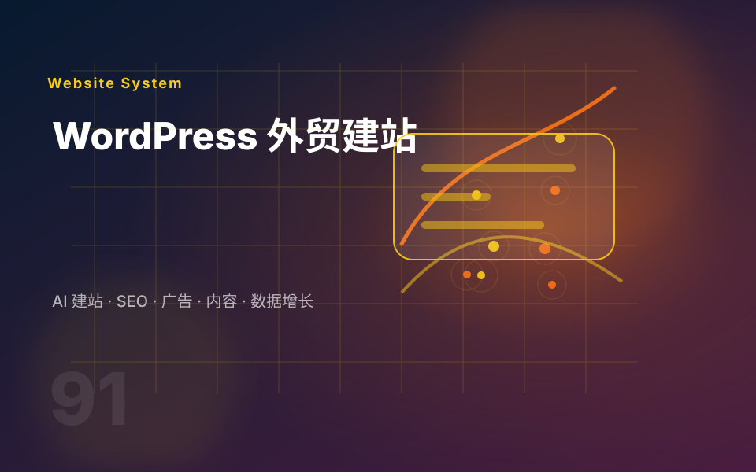

网站现状
有没有现有网站？是从 0 开始、旧站改版、准备投广告，还是已经有流量但询盘少？
不需要写成长文，先把现状讲清楚就够了。我会基于这些信息判断建站方式、页面优先级和需要补的资料。
有没有现有网站？是从 0 开始、旧站改版、准备投广告，还是已经有流量但询盘少？
有多少产品分类、图片、参数、证书、案例、FAQ 和下载资料？资料完整度会直接影响交付方式。
主要面向哪些国家、语言和客户类型？是否需要多语言页面、SEO 内容、广告落地页或 Shopify 交易功能？
发 2-3 个喜欢或不喜欢的网站，并说明原因。这样更容易判断风格、栏目和功能复杂度。

如果你已经有网站，也可以直接把网址发来；如果还没有网站，就发产品、行业和目标市场。
如果客户还不确定自己要官网、WordPress 站还是运营优化，可以先读几篇基础内容，再带着网站、资料情况和目标市场来咨询。
你可以先在博客站了解建站和运营逻辑，再到模板站挑选喜欢的 Demo，最后把资料发到当前服务站来确认方案。
先看 iwithfuture.com 的 WordPress、Google 工具和阿里国际站内容。
在 demo.iwithfuture.com 记录模板编号或截图，作为设计参考。
整理 logo、产品图片、公司介绍、联系方式和目标市场。
把 Demo、资料和投入计划发来，我会判断适合哪种建站方案。